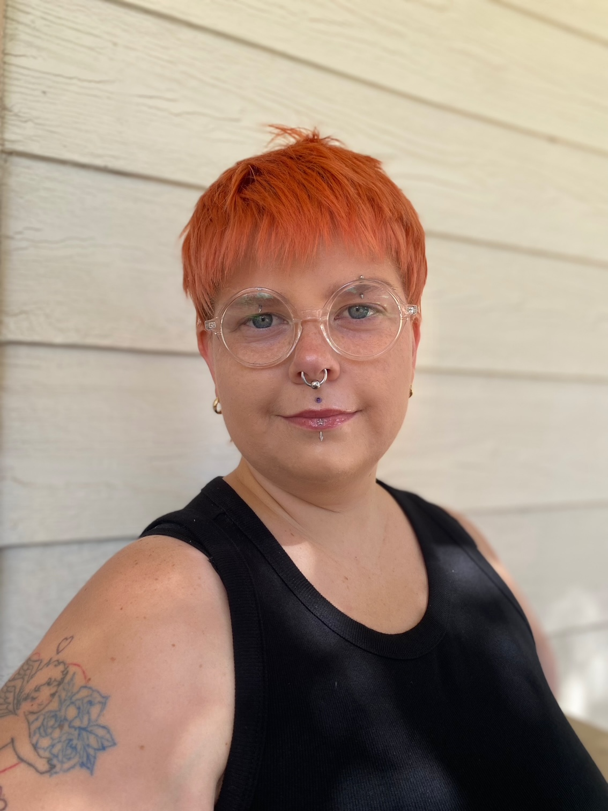
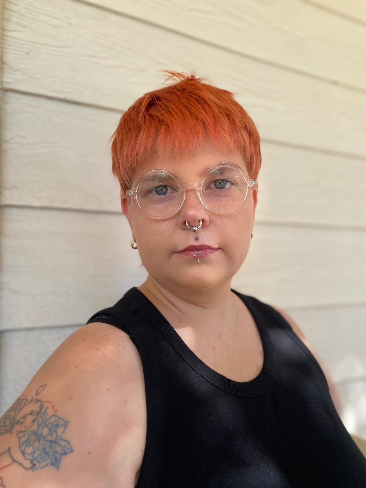
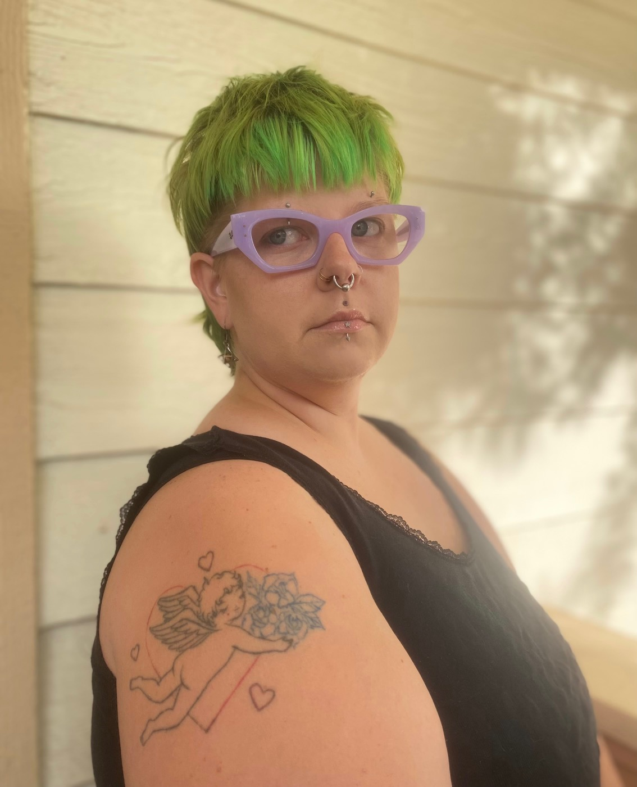

Bio
- Lars Toler (they/he) is a multi-hyphenate theatre maker based in the Los Angeles area.
- Performance credits include Jane Doe in Ride the Cyclone and Riff Raff in The Rocky Horror Show.
- As a playwright, they have written several shows including Smitten and Magnets, both produced at California State University Long Beach.
- They previously directed multiple shows at CSULB, and, in September 2025, Assistant Directed and performed in Coeurage Ensemble’s production of Pericles in partnership with the City of West Hollywood.
- They are a resident member of Coeurage Ensemble as well as a member of the LGBTQ+ Musical Theatre Network, Ring of Keys. They often perform in queer/trans/gender-nonconforming events throughout Southern California.
- Through his art, Lars aims to be as vocal and forward as possible about trans rights, disability rights, mental health advocacy, and the rights of all. No one is free when others are oppressed. @larslarzlars on instagram.




